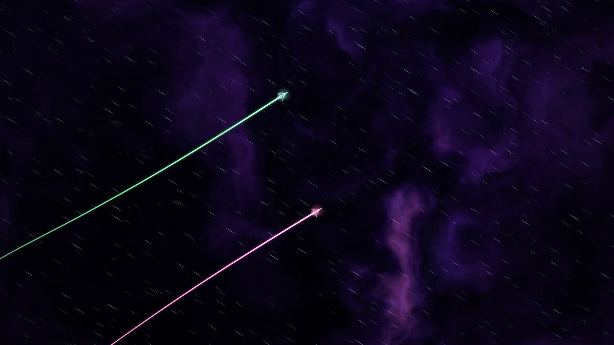
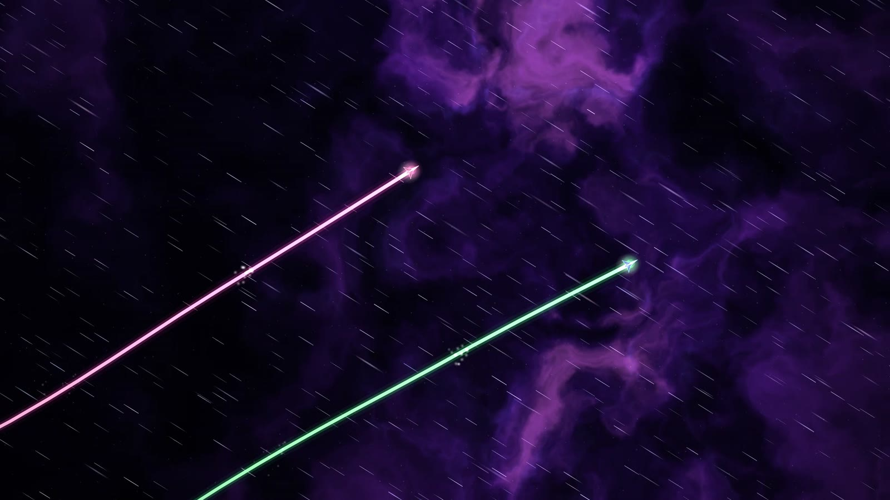
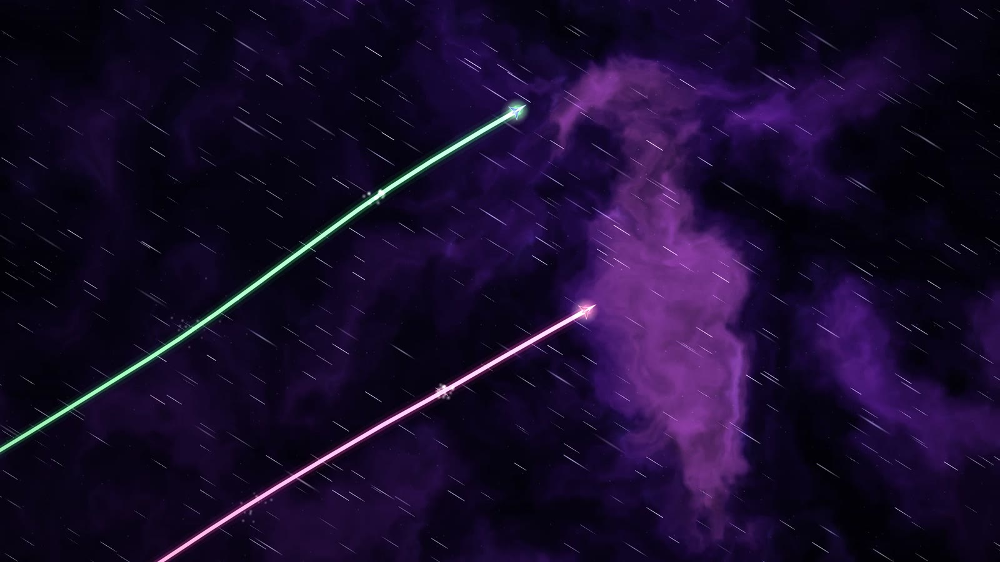
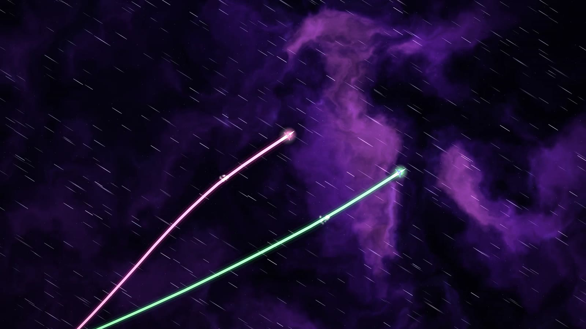

SpaceWall Ships
An audio-reactive animated wallpaper for KDE Plasma 5: a violet nebula, falling rain and two small ships whose movements follow your music. It reacts to whatever your computer plays, runs locally and costs nothing.
Un fond d'écran animé qui réagit au son, pour KDE Plasma 5 : une nébuleuse violette, une pluie qui tombe et deux petits vaisseaux dont les mouvements suivent votre musique. Il réagit à tout ce que joue votre ordinateur, fonctionne en local et ne coûte rien.
24 seconds, no sound: a quiet passage, the music building up, the loud drop and a crossing.
24 secondes, sans son : un passage calme, la musique qui monte, le passage fort et un croisement.
What the ships doCe que font les vaisseaux
- Quiet music: the ships drift in parallel. Louder: they jump between lanes, cross each other and do barrel-roll flips.
- Pitch sets how far apart they sit; bass hits push them forward; snare or voice accents make one ship jump; hi-hats trigger the flips.
- A small button in your top panel turns the animation off completely (0% CPU) and back on.
- Musique calme : les vaisseaux dérivent en parallèle. Plus fort : ils changent de voie, se croisent et font des tonneaux.
- La hauteur du son règle leur écart ; les basses les poussent vers l'avant ; les accents de caisse claire ou de voix font sauter un vaisseau ; les charleys déclenchent les tonneaux.
- Un petit bouton dans votre barre du haut éteint complètement l'animation (0 % de processeur) et la rallume.
ScreenshotsCaptures




InstallInstallation
Ubuntu 24.04+ (Kubuntu, or Ubuntu with KDE Plasma 5) or Linux Mint 22 with KDE. Not for GNOME, Plasma 6, Windows or macOS.
Ubuntu 24.04+ (Kubuntu, ou Ubuntu avec KDE Plasma 5) ou Linux Mint 22 avec KDE. Ni pour GNOME, ni Plasma 6, ni Windows, ni macOS.
git clone https://github.com/dghAyoub/spacewall-ships.git cd spacewall-ships ./install.sh --install-deps